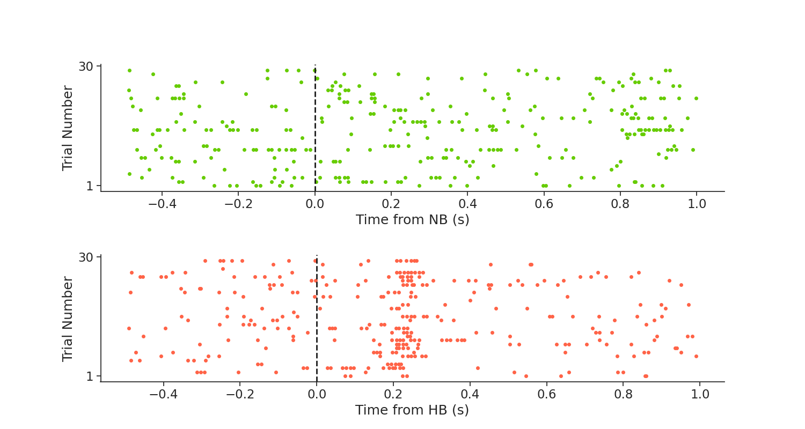
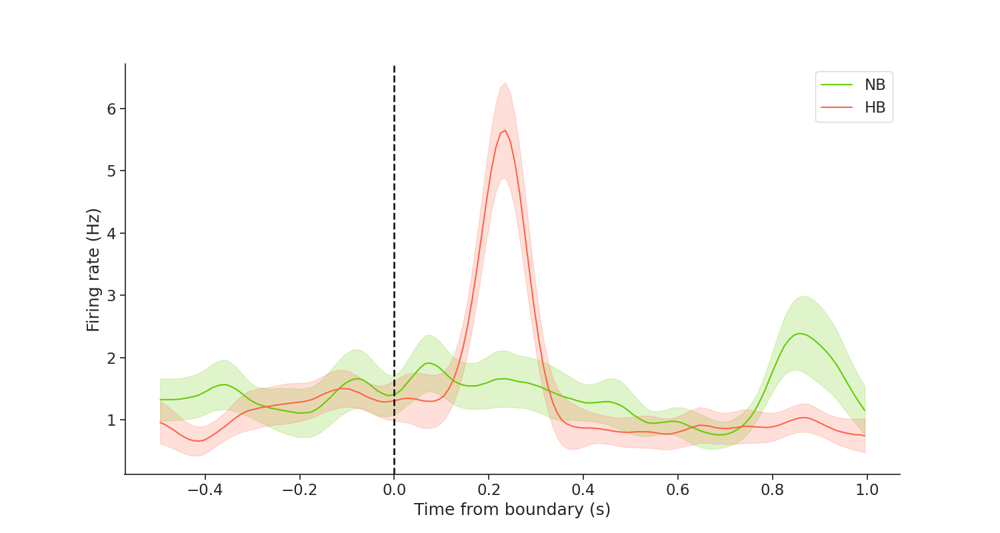

Note
Click here to download the full example code
Zheng et al (2022) Dataset Tutorial
This tutorial demonstrates how we use Pynapple on various publicly available datasets in systems neuroscience to streamline analysis. In this tutorial, we will examine the dataset from Zheng et al (2022), which was used to generate Figure 4c in the publication.
The NWB file for the example used here is provided in this repository. The entire dataset can be downloaded here.
See the documentation of Pynapple for instructions on installing the package.
This tutorial was made by Dhruv Mehrotra.
First, import the necessary libraries:
Warning
This tutorial uses seaborn and matplotlib for displaying the figure as well as the dandi package
You can install all with pip install matplotlib seaborn dandi dandischema
Now, import the necessary libraries:
Stream the data from DANDI
from pynwb import NWBHDF5IO
from dandi.dandiapi import DandiAPIClient
import fsspec
from fsspec.implementations.cached import CachingFileSystem
import h5py
# Enter the session ID and path to the file
dandiset_id, filepath = ("000207", "sub-4/sub-4_ses-4_ecephys.nwb")
with DandiAPIClient() as client:
asset = client.get_dandiset(dandiset_id, "draft").get_asset_by_path(filepath)
s3_url = asset.get_content_url(follow_redirects=1, strip_query=True)
# first, create a virtual filesystem based on the http protocol
fs = fsspec.filesystem("http")
# create a cache to save downloaded data to disk (optional)
fs = CachingFileSystem(
fs=fs,
cache_storage="nwb-cache", # Local folder for the cache
)
# next, open the file
file = h5py.File(fs.open(s3_url, "rb"))
io = NWBHDF5IO(file=file, load_namespaces=True)
Out:
/mnt/home/gviejo/mambaforge/envs/pynapple/lib/python3.10/site-packages/hdmf/spec/namespace.py:531: UserWarning: Ignoring cached namespace 'hdmf-common' version 1.5.0 because version 1.7.0 is already loaded.
warn("Ignoring cached namespace '%s' version %s because version %s is already loaded."
/mnt/home/gviejo/mambaforge/envs/pynapple/lib/python3.10/site-packages/hdmf/spec/namespace.py:531: UserWarning: Ignoring cached namespace 'core' version 2.5.0 because version 2.6.0-alpha is already loaded.
warn("Ignoring cached namespace '%s' version %s because version %s is already loaded."
/mnt/home/gviejo/mambaforge/envs/pynapple/lib/python3.10/site-packages/hdmf/spec/namespace.py:531: UserWarning: Ignoring cached namespace 'hdmf-experimental' version 0.1.0 because version 0.4.0 is already loaded.
warn("Ignoring cached namespace '%s' version %s because version %s is already loaded."
Parsing the data
The first step is to load the data from the Neurodata Without Borders (NWB) file. This is done as follows:
custom_params = {"axes.spines.right": False, "axes.spines.top": False}
sns.set_theme(style="ticks", palette="colorblind", font_scale=1.5, rc=custom_params)
data = nap.NWBFile(io.read()) # Load the NWB file for this dataset
# What does this look like?
print(data)
Out:
4
┍━━━━━━━━━━━━━━━━━━━━━━━━━━┯━━━━━━━━━━━━━┑
│ Keys │ Type │
┝━━━━━━━━━━━━━━━━━━━━━━━━━━┿━━━━━━━━━━━━━┥
│ units │ TsGroup │
│ timediscrimination_table │ IntervalSet │
│ recognition_table │ IntervalSet │
│ encoding_table │ IntervalSet │
│ experiment_ids │ Tsd │
│ events │ Tsd │
┕━━━━━━━━━━━━━━━━━━━━━━━━━━┷━━━━━━━━━━━━━┙
Get spike timings
What does this look like?
Out:
Index rate x y z imp location filtering group_name origChannel
------- ------ ----- ------ ------ ----- ----------------- ----------- ------------ -------------
0 7 26.63 -15.83 -16.49 nan hippocampus_right 300-3000Hz micros 139
1 7.24 26.63 -15.83 -16.49 nan hippocampus_right 300-3000Hz micros 139
2 6.09 26.63 -15.83 -16.49 nan hippocampus_right 300-3000Hz micros 140
3 6.92 26.63 -15.83 -16.49 nan hippocampus_right 300-3000Hz micros 142
4 0.4 26.63 -15.83 -16.49 nan hippocampus_right 300-3000Hz micros 142
5 0.46 26.63 -15.83 -16.49 nan hippocampus_right 300-3000Hz micros 143
6 1.81 26.63 -15.83 -16.49 nan hippocampus_right 300-3000Hz micros 143
7 4.79 26.63 -15.83 -16.49 nan hippocampus_right 300-3000Hz micros 144
8 1.31 21.36 -0.59 -21.55 nan amygdala_right 300-3000Hz micros 154
9 0.62 21.36 -0.59 -21.55 nan amygdala_right 300-3000Hz micros 156
10 1.51 21.36 -0.59 -21.55 nan amygdala_right 300-3000Hz micros 157
11 0.77 21.36 -0.59 -21.55 nan amygdala_right 300-3000Hz micros 157
12 1.46 21.36 -0.59 -21.55 nan amygdala_right 300-3000Hz micros 158
13 0.4 21.36 -0.59 -21.55 nan amygdala_right 300-3000Hz micros 158
14 6.27 21.36 -0.59 -21.55 nan amygdala_right 300-3000Hz micros 158
15 1.15 21.36 -0.59 -21.55 nan amygdala_right 300-3000Hz micros 159
16 2.15 21.36 -0.59 -21.55 nan amygdala_right 300-3000Hz micros 159
17 0.63 21.36 -0.59 -21.55 nan amygdala_right 300-3000Hz micros 159
18 2.88 26.63 -15.83 -16.49 nan hippocampus_right 300-3000Hz micros 184
19 0.35 26.63 -15.83 -16.49 nan hippocampus_right 300-3000Hz micros 185
20 1.75 26.63 -15.83 -16.49 nan hippocampus_right 300-3000Hz micros 185
21 0.58 26.63 -15.83 -16.49 nan hippocampus_right 300-3000Hz micros 186
22 2.13 26.63 -15.83 -16.49 nan hippocampus_right 300-3000Hz micros 186
23 1.51 26.63 -15.83 -16.49 nan hippocampus_right 300-3000Hz micros 187
24 0.27 26.63 -15.83 -16.49 nan hippocampus_right 300-3000Hz micros 188
25 7.35 26.63 -15.83 -16.49 nan hippocampus_right 300-3000Hz micros 188
26 0.37 26.63 -15.83 -16.49 nan hippocampus_right 300-3000Hz micros 188
27 1.89 26.63 -15.83 -16.49 nan hippocampus_right 300-3000Hz micros 188
28 1.13 26.63 -15.83 -16.49 nan hippocampus_right 300-3000Hz micros 189
29 0.6 26.63 -15.83 -16.49 nan hippocampus_right 300-3000Hz micros 190
30 0.18 26.63 -15.83 -16.49 nan hippocampus_right 300-3000Hz micros 190
31 2.33 26.63 -15.83 -16.49 nan hippocampus_right 300-3000Hz micros 191
32 0.31 26.63 -15.83 -16.49 nan hippocampus_right 300-3000Hz micros 191
33 0.69 26.63 -15.83 -16.49 nan hippocampus_right 300-3000Hz micros 191
34 0.66 26.63 -15.83 -16.49 nan hippocampus_right 300-3000Hz micros 192
This TsGroup has, among other information, the mean firing rate of the unit, the X, Y and Z coordinates, the brain region the unit was recorded from, and the channel number on which the unit was located.
Next, let's get the encoding table of all stimulus times, as shown below:
Out:
/mnt/home/gviejo/pynapple/pynapple/io/interface_nwb.py:444: UserWarning: Too many metadata. Returning pandas.DataFrame, not IntervalSet
data = self._f_eval[self.data[key]["type"]](obj)
start_time stop_time fixcross_time ExperimentID boundary1_time boundary2_time boundary3_time stimCategory Clip_name
id
0 1.068463 9.101330 0.056555 70.0 5.068463 NaN NaN 0 NB_24.mp4
1 10.182342 18.114558 9.116686 70.0 12.880601 14.434447 NaN 1 SB_23.mp4
2 19.071072 27.137388 18.130498 70.0 23.071072 NaN NaN 2 HB_20.mp4
3 28.160476 36.390234 27.154926 70.0 32.160475 NaN NaN 0 NB_26.mp4
4 37.470909 44.584497 36.409347 70.0 41.470909 NaN NaN 0 NB_25.mp4
.. ... ... ... ... ... ... ... ... ...
85 892.755233 900.921092 891.747973 70.0 898.284193 NaN NaN 1 SB_2.mp4
86 901.906850 910.171979 900.940121 70.0 905.906850 NaN NaN 2 HB_27.mp4
87 911.138396 919.335950 910.190938 70.0 915.138396 912.697926 917.067151 2 HB_10.mp4
88 920.363950 928.329845 919.354902 70.0 921.906193 923.478531 924.924117 1 SB_27.mp4
89 930.639635 939.073029 929.718098 70.0 932.997106 934.191369 NaN 1 SB_25.mp4
[90 rows x 9 columns]
This table has, among other things, the scene boundary times for which we will plot the peri-event time histogram (PETH).
There are 3 types of scene boundaries in this data. For the purposes of demonstration, we will use only the "No boundary" (NB) and the "Hard boundary" (HB conditions). The encoding table has a stimCategory field, which tells us the type of boundary corresponding to a given trial.
stimCategory = np.array(
encoding_table.stimCategory
) # Get the scene boundary type for all trials
# What does this look like?
print(stimCategory)
Out:
[0 1 2 0 0 0 1 0 2 1 2 0 2 0 1 1 1 1 0 0 2 0 0 2 0 1 0 2 0 0 2 0 0 0 0 2 2
2 0 0 1 1 1 1 0 2 1 1 0 2 1 0 2 2 2 0 1 0 1 1 2 2 0 2 2 2 1 1 2 1 0 2 2 1
0 1 2 0 2 2 1 1 1 1 2 1 2 2 1 1]
Trials marked 0 correspond to NB, while trials marked 2 correspond to HB. Let's extract the trial numbers for NB and HB trials, as shown below:
indxNB = np.where(stimCategory == 0) # NB trial indices
indxHB = np.where(stimCategory == 2) # HB trial indices
The encoding table also has 3 types of boundary times. For the purposes of our demonstration, we will focus on boundary1 times, and extract them as shown below:
boundary1_time = np.array(encoding_table.boundary1_time) # Get timings of Boundary1
# What does this look like?
print(boundary1_time)
Out:
[ 5.06846275 12.88060075 23.071072 32.1604755 41.470909
49.5747065 56.07442325 72.803867 82.1299925 92.77667275
99.9925845 109.0787315 118.0778575 133.12435825 140.94827125
147.8236585 160.726736 170.441769 183.29262575 191.11327175
199.63382425 208.5142425 217.6186295 232.62687825 241.7270365
250.58327775 259.5545145 268.6661045 278.026902 287.04517875
301.2426685 310.21093375 319.1822215 328.13037175 337.16751875
363.737004 372.785663 381.86749625 391.2704085 400.5077995
407.28660475 416.0272855 431.792285 441.75272875 448.88401175
456.97766275 463.88864475 472.13035175 490.53584775 499.7064625
507.6917495 518.78793775 528.140675 537.1412335 552.5116415
562.4287995 569.44012625 580.99649325 591.974217 597.74463025
608.3638655 624.44389125 633.4175285 642.3969695 651.776966
660.699774 676.9439885 681.3602465 692.799878 699.53861175
711.341688 720.4819275 729.43782175 772.99961425 780.19490625
788.1175045 798.34264525 807.54519 817.25781375 835.1736475
842.54760125 852.294991 861.40924725 868.63873425 887.93252325
898.284193 905.9068505 915.1383965 921.90619325 932.99710575]
This contains the timings of all boundaries in this block of trials. Note that we also have the type of boundary for each trial. Let's store the NB and HB boundary timings in separate variables, as Pynapple Ts objects:
Peri-Event Time Histogram (PETH)
A PETH is a plot where we align a variable of interest (for example, spikes) to an external event (in this case, to boundary times). This visualization helps us infer relationships between the two.
For our demonstration, we will align the spikes of the first unit, which is located in the hippocampus, to the times of NB and HB. You can do a quick check to verify that the first unit is indeed located in the hippocampus, we leave it to you.
With Pynapple, PETHs can be computed with a single line of code!
NB_peth = nap.compute_perievent(
spikes[0], NB, minmax=(-0.5, 1)
) # Compute PETH of unit aligned to NB, for -0.5 to 1s windows
HB_peth = nap.compute_perievent(
spikes[0], HB, minmax=(-0.5, 1)
) # Compute PETH of unit aligned to HB, for -0.5 to 1s windows
Let's plot the PETH
plt.figure(figsize =(15,8))
plt.subplot(211) # Plot the figures in 2 rows
for i, n in enumerate(NB_peth):
plt.plot(
NB_peth[n].as_units("s").fillna(i),
"o",
color=[102 / 255, 204 / 255, 0 / 255],
markersize=4,
) # Plot PETH
plt.axvline(0, linewidth=2, color="k", linestyle="--") # Plot a line at t = 0
plt.yticks([0, 30]) # Set ticks on Y-axis
plt.gca().set_yticklabels(["1", "30"]) # Label the ticks
plt.xlabel("Time from NB (s)") # Time from boundary in seconds, on X-axis
plt.ylabel("Trial Number") # Trial number on Y-axis
plt.subplot(212)
for i, n in enumerate(HB_peth):
plt.plot(
HB_peth[n].as_units("s").fillna(i),
"o",
color=[255 / 255, 99 / 255, 71 / 255],
markersize=4,
) # Plot PETH
plt.axvline(0, linewidth=2, color="k", linestyle="--") # Plot a line at t = 0
plt.yticks([0, 30]) # Set ticks on Y-axis
plt.gca().set_yticklabels(["1", "30"]) # Label the ticks
plt.xlabel("Time from HB (s)") # Time from boundary in seconds, on X-axis
plt.ylabel("Trial Number") # Trial number on Y-axis
plt.subplots_adjust(wspace=0.2, hspace=0.5, top=0.85)

Awesome! From the PETH, we can see that this neuron fires after boundary onset in HB trials. This is an example of what the authors describe here as a boundary cell.
PETH of firing rate for NB and HB cells
Now that we have the PETH of spiking, we can go one step further. We will plot the mean firing rate of this cell aligned to the boundary for each trial type. Doing this in Pynapple is very simple!
bin_size = 0.2 # 200ms bin size
step_size = 0.01 # 10ms step size, to make overlapping bins
winsize = int(bin_size / step_size) # Window size
Use Pynapple to compute binned spike counts
counts_NB = NB_peth.count(step_size) # Spike counts binned in 10ms steps, for NB trials
counts_HB = HB_peth.count(step_size) # Spike counts binned in 10ms steps, for HB trials
Smooth the binned spike counts using a window of size 20, for both trial types
counts_NB = (
counts_NB.as_dataframe()
.rolling(winsize, win_type="gaussian", min_periods=1, center=True, axis=0)
.mean(std=0.2 * winsize)
)
counts_HB = (
counts_HB.as_dataframe()
.rolling(winsize, win_type="gaussian", min_periods=1, center=True, axis=0)
.mean(std=0.2 * winsize)
)
Out:
/mnt/home/gviejo/mambaforge/envs/pynapple/lib/python3.10/site-packages/pandas/core/window/rolling.py:1218: DeprecationWarning: Importing gaussian from 'scipy.signal' is deprecated and will raise an error in SciPy 1.13.0. Please use 'scipy.signal.windows.gaussian' or the convenience function 'scipy.signal.get_window' instead.
window = self._scipy_weight_generator( # type: ignore[misc]
/mnt/home/gviejo/mambaforge/envs/pynapple/lib/python3.10/site-packages/pandas/core/window/rolling.py:1218: DeprecationWarning: Importing gaussian from 'scipy.signal' is deprecated and will raise an error in SciPy 1.13.0. Please use 'scipy.signal.windows.gaussian' or the convenience function 'scipy.signal.get_window' instead.
window = self._scipy_weight_generator( # type: ignore[misc]
Compute firing rate for both trial types
Compute the mean firing rate for both trial types
Compute standard error of mean (SEM) of the firing rate for both trial types
Plot the mean +/- SEM of firing rate for both trial types
plt.figure(figsize =(15,8))
plt.plot(
meanfr_NB, color=[102 / 255, 204 / 255, 0 / 255], label="NB"
) # Plot mean firing rate for NB trials
# Plot SEM for NB trials
plt.fill_between(
meanfr_NB.index.values,
meanfr_NB.values - error_NB,
meanfr_NB.values + error_NB,
color=[102 / 255, 204 / 255, 0 / 255],
alpha=0.2,
)
plt.plot(
meanfr_HB, color=[255 / 255, 99 / 255, 71 / 255], label="HB"
) # Plot mean firing rate for HB trials
# Plot SEM for NB trials
plt.fill_between(
meanfr_HB.index.values,
meanfr_HB.values - error_HB,
meanfr_HB.values + error_HB,
color=[255 / 255, 99 / 255, 71 / 255],
alpha=0.2,
)
plt.axvline(0, linewidth=2, color="k", linestyle="--") # Plot a line at t = 0
plt.xlabel("Time from boundary (s)") # Time from boundary in seconds, on X-axis
plt.ylabel("Firing rate (Hz)") # Firing rate in Hz on Y-axis
plt.legend(loc="upper right")

Out:
This plot verifies what we visualized in the PETH rasters above, that this cell responds to a hard boundary. Hence, it is a boundary cell. To learn more about these cells, please check out the original study here.
I hope this tutorial was helpful. If you have any questions, comments or suggestions, please feel free to reach out to the Pynapple Team!
Total running time of the script: ( 0 minutes 1.142 seconds)
Download Python source code: tutorial_human_dataset.py